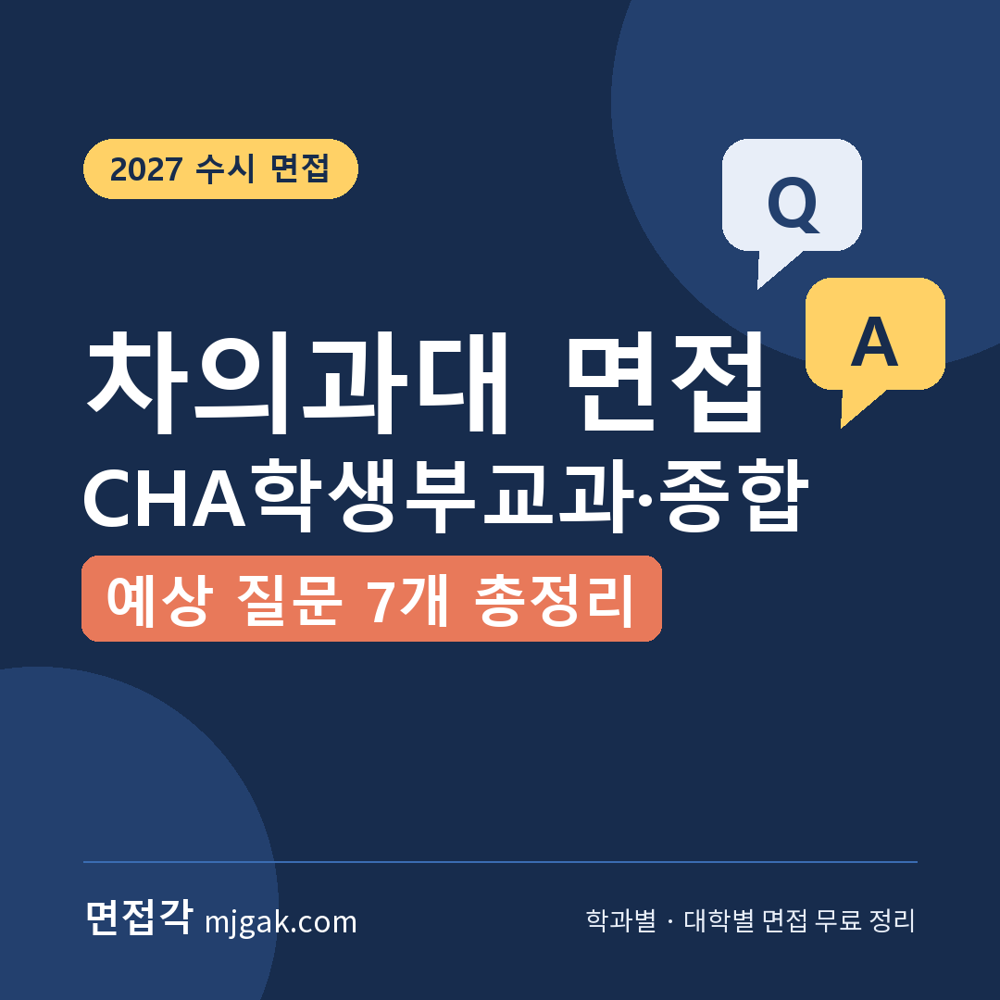
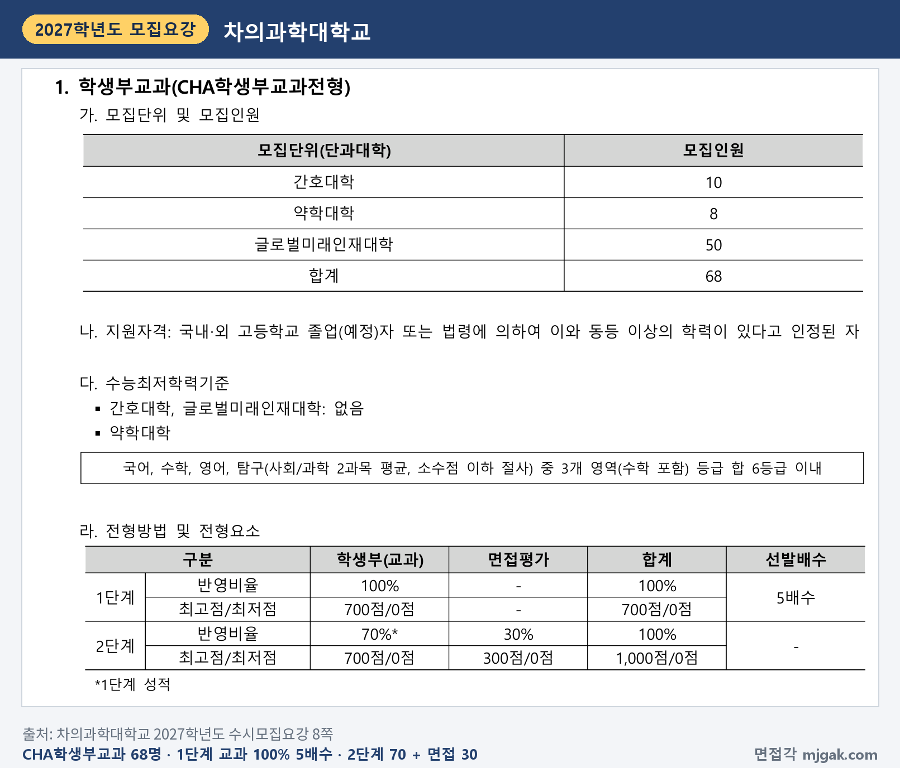
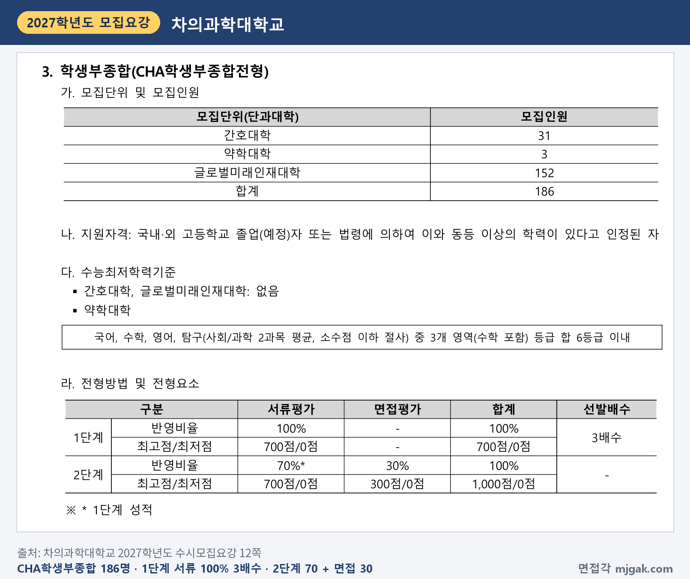
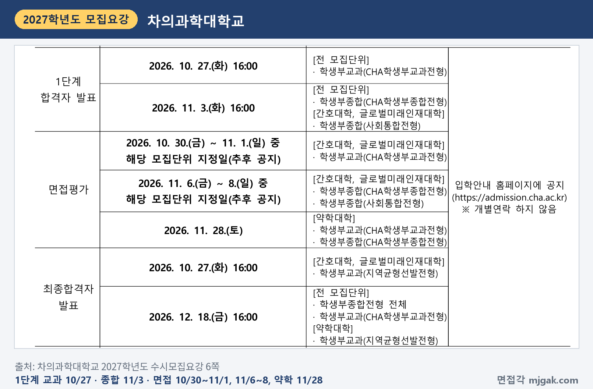
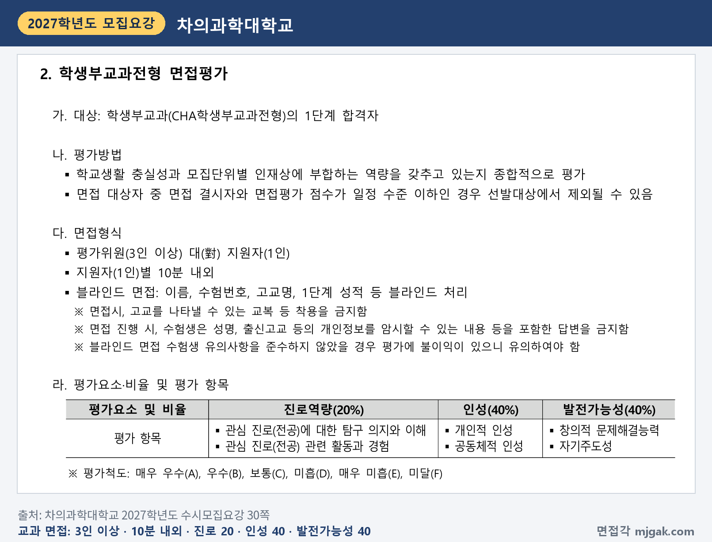
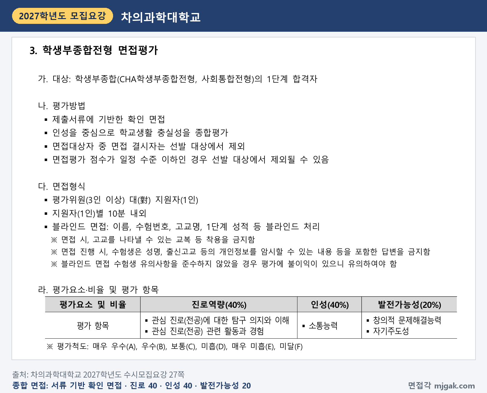
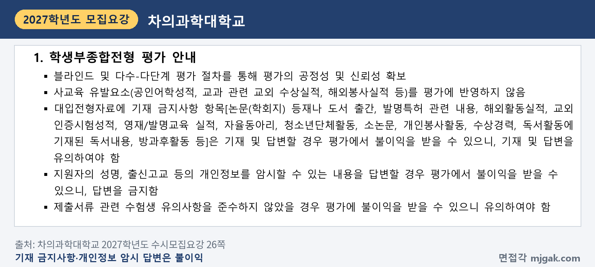
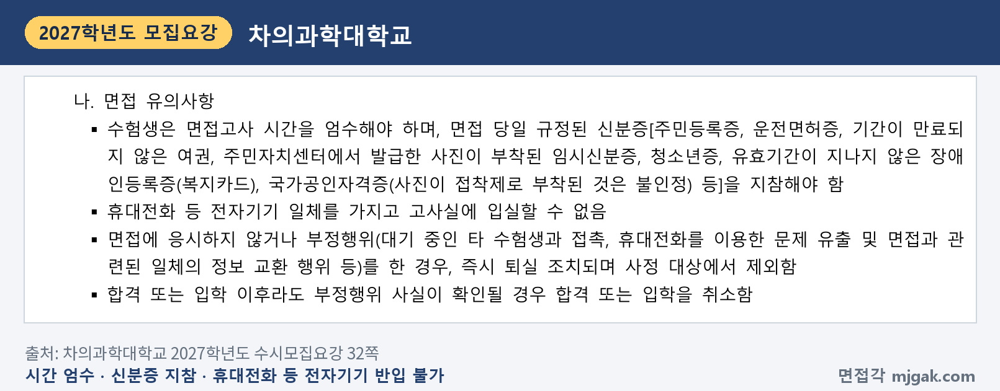
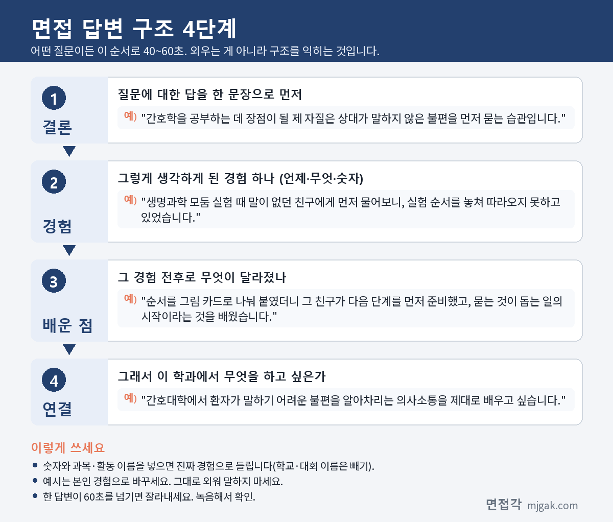

Ctrl+V (서식 유지됨)제목
본문 (이 영역 전체가 복사됩니다)
📷 여기에 이미지 넣기 — 썸네일 — thumb-cha.png (대표 이미지로 지정)
차의과대 CHA학생부교과와 CHA학생부종합에서 먼저 챙길 것은 짧은 간격입니다. CHA학생부교과는 1단계 합격자 발표가 10월 27일(화) 16시이고, 간호대학·글로벌미래인재대학 면접은 10월 30일(금)~11월 1일(일) 중 모집단위 지정일입니다. CHA학생부종합은 11월 3일(화) 16시 발표, 11월 6일(금)~8일(일) 면접입니다. 두 전형 모두 2단계에서 1단계 성적 70%와 면접 30%를 합산하지만, 면접 평가 비중은 다릅니다. 약학대학은 두 전형 모두 수능 뒤인 11월 28일(토)에 면접을 봅니다. 이 글은 차의과학대학교 2027학년도 수시모집요강과 2026학년도 선행학습 영향평가 자체평가보고서를 바탕으로 두 전형의 전형 방법, 일정, 면접 방식, 예상 질문 7개, 준비 순서를 CHA학생부교과 중심으로 정리했습니다. 두 전형에 지원한 고3과 재수생이 읽으시면 됩니다.
1. 두 전형, 2027학년도에는 어떻게 보나
CHA학생부교과는 68명을 뽑습니다. 간호대학 10명, 약학대학 8명, 글로벌미래인재대학 50명입니다. 1단계에서 학생부(교과) 100%(700점)로 5배수를 뽑고, 2단계에서 1단계 성적 70%(700점)와 면접 30%(300점)를 합산합니다. 수능 최저는 간호대학·글로벌미래인재대학은 없고, 약학대학만 국어·수학·영어·탐구(사회/과학 2과목 평균, 소수점 이하 절사) 중 수학 포함 3개 영역 등급 합 6등급 이내입니다(8쪽). 모집인원에 5를 곱해 이 글에서 계산하면 1단계 합격 규모는 간호대학 50명, 글로벌미래인재대학 250명, 약학대학 40명입니다.
📷 여기에 이미지 넣기 — 캡처 1 — 차의과학대학교 2027학년도 수시모집요강 8쪽: cha-2027-kyogwa-method.png
CHA학생부종합은 186명(간호대학 31명, 약학대학 3명, 글로벌미래인재대학 152명)을 뽑습니다. 1단계는 서류평가 100%(700점)로 3배수, 2단계 비율과 수능 최저는 CHA학생부교과와 같습니다(12쪽). 서류평가는 학업역량 40%, 진로역량 40%, 공동체역량 20%입니다(26·27쪽). 글로벌미래인재대학은 무전공으로 입학해 2학년 진급 때 생명과학대학·헬스케어융합대학의 전공 중 1, 2전공을 고릅니다(5쪽). 2026학년도 미래융합대학에서 이름이 바뀌었습니다(4쪽).
📷 여기에 이미지 넣기 — 캡처 2 — 차의과학대학교 2027학년도 수시모집요강 12쪽: cha-2027-jonghap-method.png
두 전형 모두 면접 결시자는 선발 대상에서 제외하고, 면접평가 점수가 일정 수준 이하이면 제외될 수 있습니다(8·12쪽). 2단계 동점자는 면접평가 점수, 면접 진로역량, 발전가능성, 인성 점수 순으로 가립니다(9·13쪽). 학교폭력 조치사항은 CHA학생부교과에서 조치 호수에 따라 1단계 교과성적을 최고 30%(8·9호)까지 감점하고, CHA학생부종합에서는 서류 공동체역량과 면접 인성에 반영하며 8·9호는 두 영역 0점입니다(8·12·31쪽). 전형료는 CHA학생부교과 75,000원, CHA학생부종합 85,000원이고, 1단계 불합격자에게 20,000원을 돌려줍니다. 면접 결시는 환불 대상이 아닙니다(36쪽).
2. 언제 보나: 1단계 발표 사흘 뒤 면접
일정은 날짜순으로 이렇습니다(6쪽).
- 10월 27일(화) 16:00: CHA학생부교과 1단계 발표(전 모집단위)
- 10월 30일(금) ~ 11월 1일(일) 중 모집단위 지정일: CHA학생부교과 간호대학·글로벌미래인재대학 면접
- 11월 3일(화) 16:00: CHA학생부종합 1단계 발표(전 모집단위)
- 11월 6일(금) ~ 8일(일) 중 모집단위 지정일: CHA학생부종합 간호대학·글로벌미래인재대학 면접
- 11월 19일(목): 수능
- 11월 28일(토): 약학대학 면접(CHA학생부교과·CHA학생부종합)
- 12월 18일(금) 16:00: 최종 합격자 발표, 최초합격자 등록은 12월 21일(월)~23일(수)
발표와 면접은 입학안내 홈페이지(admission.cha.ac.kr)에 공지하고 개별 연락은 하지 않습니다. 모집단위별 면접 날짜는 "추후 공지"로 되어 있습니다(6쪽). 1단계 발표에서 첫 면접일까지는 두 전형 모두 3일입니다(이 글에서 계산한 값).
📷 여기에 이미지 넣기 — 캡처 3 — 차의과학대학교 2027학년도 수시모집요강 6쪽: cha-2027-schedule.png
3. 면접은 어떻게 보나: 형식은 같고 비중이 다르다
두 전형의 면접 형식은 같습니다. 평가위원 3인 이상이 지원자 1명을 10분 내외로 보는 블라인드 면접이고, 이름·수험번호·고교명·1단계 성적을 블라인드 처리합니다. 고교를 나타낼 수 있는 교복 등은 입을 수 없고, 성명·출신고교 등 개인정보를 암시하는 답변은 금지입니다. 평가척도는 A~F 6단계입니다(27·30쪽).
▶ CHA학생부교과: 인성·발전가능성 각 40%
평가방법은 "학교생활 충실성과 모집단위별 인재상에 부합하는 역량"을 종합 평가하는 것입니다. 진로역량 20%(관심 진로에 대한 탐구 의지와 이해, 관련 활동과 경험), 인성 40%(개인적 인성, 공동체적 인성), 발전가능성 40%(창의적 문제해결능력, 자기주도성)입니다(30쪽). 면접 300점으로 환산하면 인성·발전가능성이 각 120점, 진로역량이 60점입니다(이 글에서 계산한 값).
📷 여기에 이미지 넣기 — 캡처 4 — 차의과학대학교 2027학년도 수시모집요강 30쪽: cha-2027-kyogwa-interview.png
▶ CHA학생부종합: 진로역량·인성 각 40%, 서류 확인 면접
평가방법은 "제출서류에 기반한 확인 면접"이고, 인성을 중심으로 학교생활 충실성을 종합평가합니다. 진로역량 40%(교과와 같은 두 항목), 인성 40%(소통능력), 발전가능성 20%(창의적 문제해결능력, 자기주도성)입니다(27쪽). 자율동아리, 개인봉사활동, 수상경력, 독서활동에 기재된 독서내용, 소논문, 방과후활동 등 기재 금지사항을 답변하면 평가에서 불이익을 받을 수 있습니다(26쪽).
📷 여기에 이미지 넣기 — 캡처 5 — 차의과학대학교 2027학년도 수시모집요강 27쪽: cha-2027-jonghap-interview.png
📷 여기에 이미지 넣기 — 캡처 6 — 차의과학대학교 2027학년도 수시모집요강 26쪽: cha-2027-jonghap-notice.png
면접 당일에는 규정된 신분증(주민등록증, 운전면허증, 기간이 남은 여권, 청소년증 등)을 지참하고, 휴대전화 등 전자기기는 고사실에 가지고 들어갈 수 없습니다. 대기 중 다른 수험생과 접촉하는 등 부정행위를 하면 즉시 퇴실되고 사정에서 제외됩니다(32쪽).
📷 여기에 이미지 넣기 — 캡처 7 — 차의과학대학교 2027학년도 수시모집요강 32쪽: cha-2027-rules.png
4. 차의과대 면접 기출, 공개된 것이 있나
2027학년도 모집요강에는 면접 질문 예시가 없습니다. 차의과대가 2026년 3월에 낸 2026학년도 선행학습 영향평가 자체평가보고서에는 면접 운영 방식이 나옵니다. 2026학년도 CHA학생부교과는 평가위원에게 가이드 문항을 제공하고 "면접관 3인 대 지원자 1인 개별 대면면접"으로 치렀으며, 가이드 문항 활용은 필수가 아니었다고 적었습니다(보고서 7·8쪽). 보고서에는 2026학년도 가이드 문항 일부가 진로역량·인성·발전가능성 평가요소별 요약표로 실려 있고, 아래 예상 질문은 그 주제를 참고해 새로 쓴 것입니다(보고서 8·9쪽). CHA학생부종합은 학교생활기록부 등 제출서류를 바탕으로 평가자가 문항을 만들고, 서류평가 때 기록한 면접질문을 활용했습니다(보고서 8·9쪽). 고교 교과를 적용한 문항은 쓰지 않았습니다(보고서 3쪽). 2027학년도에 같은 질문이 나온다는 뜻은 아닙니다.
5. 예상 질문 7개와 답변법
아래 7개는 대학이 공개한 질문이 아니라, 2027학년도 평가 항목과 보고서의 가이드 문항 주제로 만든 예상 질문입니다. 질문 1~6은 CHA학생부교과, 질문 7은 CHA학생부종합의 확인 면접에 맞췄습니다. 예시 답변은 모집단위를 바꿔 쓴 가상의 예시이니 본인 경험으로 바꾸세요.
▶ 질문 1. 희망 전공을 공부하는 데 장점이 될 본인의 자질은 무엇인가요? (진로역량: 관심 진로에 대한 탐구 의지와 이해)
왜 묻나: 2026학년도 가이드 문항의 진로역량 주제와 같습니다. 자질을 장면으로 보여 주세요.
답변 구조: 자질 한 문장 → 그 자질이 드러난 장면 → 바뀐 결과와 배운 점 → 전공에서 쓸 곳.
답변 예시 (간호대학):
"간호학을 공부하는 데 장점이 될 제 자질은 상대가 말하지 않은 불편을 먼저 묻는 습관입니다. 생명과학 모둠 실험 때 말이 없던 친구에게 먼저 물어보니, 실험 순서를 놓쳐 따라오지 못하고 있었습니다. 순서를 그림 카드로 나눠 붙였더니 그 친구가 다음 단계를 먼저 준비했고, 묻는 것이 돕는 일의 시작이라는 것을 배웠습니다. 간호대학에서 환자가 말하기 어려운 불편을 알아차리는 의사소통을 제대로 배우고 싶습니다."
주의: "책임감", "성실함"만 말하고 끝내지 마세요. 장면 하나가 붙어야 합니다.
▶ 질문 2. 고등학교 수업 중 희망 전공과 이어진다고 느낀 수업 활동을 하나 소개해 주세요. (진로역량: 관심 진로 관련 활동과 경험)
왜 묻나: 진로역량의 "관련 활동과 경험"을 수업 장면으로 묻는 질문입니다.
답변 구조: 과목 한 문장 → 수업 활동과 막힌 점 → 바꾼 방법과 결과 → 전공 연결.
답변 예시 (약학대학):
"화학 수업의 중화 반응 단원이 약학과 이어진다고 느꼈습니다. 그 단원에서 식초 세 가지의 산 농도를 적정으로 비교했는데, 처음에는 지시약 색이 바뀌는 순간을 놓쳐 값이 들쭉날쭉했습니다. 흰 종이를 받치고 한 방울씩 떨어뜨리자 세 번 잰 값이 비슷해졌습니다. 약학대학에서 약이 몸속 산성도에 따라 어떻게 달라지는지 공부하고 싶습니다."
주의: 전문 지식보다 수업에서 직접 한 것을 말하세요.
▶ 질문 3. 함께 정한 규칙을 지키기 어려웠던 상황에서 어떻게 했나요? (인성: 공동체적 인성)
왜 묻나: 인성(40%)의 "공동체적 인성"입니다. 가이드 문항 주제에도 규칙을 지키기 어려웠던 상황이 있습니다.
답변 구조: 규칙과 어려웠던 상황 → 내가 한 선택 → 결과 → 배운 점.
답변 예시 (글로벌미래인재대학):
"학급에서 점심시간 체육관 사용 순서를 정했는데, 체육대회 직전에 우리 반 계주 연습이 길어져 다음 반 시간을 넘길 뻔했습니다. 반 친구들은 5분만 더 하자고 했지만, 저는 정한 시간에 끝내고 다음 날 아침 운동장 연습을 따로 잡자고 제안했습니다. 아침 연습에서 바통 넘기기만 집중해 연습하니 오히려 짧게 끝났습니다. 스포츠의학을 공부하며 정해진 시간 안에 효과적인 훈련 방법도 찾아보고 싶습니다."
주의: "규칙은 무조건 지켜야 합니다"로만 답하지 마세요. 다른 방법을 찾은 과정이 들어가야 합니다.
📷 여기에 이미지 넣기 — 이미지 1 — 제미나이 생성: 늦가을 햇살이 드는 캠퍼스 라운지에서 청진기·라벨 없는 약병과 막자사발·현미경·비커·탄력 밴드·색연필 옆에서 답하는 여학생(실사) / "제미나이 프롬프트 1"
(AI로 만든 이미지로, 실제 캠퍼스와 다를 수 있습니다)
▶ 질문 4. 손해를 보더라도 지키려 한 가치가 있나요? (인성: 개인적 인성)
왜 묻나: "개인적 인성"을 묻는 질문입니다. 가치 이름보다 그 가치를 지키느라 무엇을 포기했는지가 드러나야 합니다.
답변 구조: 가치 한 문장 → 그 가치를 지킨 장면 → 포기한 것 → 그 뒤 생각.
답변 예시 (글로벌미래인재대학):
"제가 지키려 한 가치는 정확함입니다. 사회문화 모둠 발표 전날, 제가 맡은 그래프의 출처가 분명하지 않다는 것을 알았습니다. 리허설 시간을 포기하고 원자료를 다시 찾아 숫자 두 개를 고쳤고, 발표는 덜 매끄러웠지만 질문에는 자신 있게 답했습니다. 심리학 전공에 관심이 있어, 설문 결과를 다룰 때도 이 습관을 지키고 싶습니다."
주의: 거창한 사건이 아니어도 됩니다. 실제로 포기한 것이 있어야 답이 살아납니다.
▶ 질문 5. 계획대로 되지 않았던 일을 다른 방법으로 풀어 본 경험이 있나요? (발전가능성: 창의적 문제해결능력)
왜 묻나: 발전가능성(40%)의 "창의적 문제해결능력"을 묻는 질문입니다.
답변 구조: 계획대로 안 된 상황 → 원인을 찾은 방법 → 바꾼 방법 → 결과.
답변 예시 (글로벌미래인재대학):
"2학년 1학기에 수학 성적이 계획만큼 나오지 않았습니다. 틀린 문제를 계산 실수, 개념 부족, 시간 부족으로 나눠 표로 세어 보니 절반이 시간 부족이었습니다. 그래서 문제집 대신 기출을 시간을 재며 풀고, 넘길 문제를 먼저 고르는 연습을 했더니 2학기에 성적이 올랐습니다. AI의료데이터학에 관심이 있는데, 숫자로 원인을 찾는 방법을 더 배우고 싶습니다."
주의: "열심히 해서 극복했습니다"로 끝내지 말고 원인을 찾은 방법을 말하세요.
▶ 질문 6. 해야 할 일이 몰렸을 때 우선순위를 어떻게 정했나요? (발전가능성: 자기주도성)
왜 묻나: "자기주도성"을 묻습니다. 누가 시키지 않은 계획을 세우고 고친 과정을 보여 주세요.
답변 구조: 상황 한 문장 → 세운 계획 → 막힌 점과 고친 계획 → 결과.
답변 예시 (간호대학):
"3학년 1학기에 수행평가 마감이 한 주에 네 개 겹친 적이 있습니다. 처음에는 마감 순서대로 했는데, 자료 조사가 필요한 과제가 계속 밀렸습니다. 그래서 일요일마다 과제를 '조사 필요'와 '바로 작성'으로 나누고, 조사 과제를 먼저 시작하도록 계획을 바꿨더니 네 개를 모두 기한 안에 냈습니다. 간호대학에서 실습과 이론 공부를 함께 해낼 때도 이 방법을 쓰겠습니다."
주의: 계획표를 말하는 데서 멈추지 말고, 계획을 고친 순간을 넣으세요.
▶ 질문 7. (CHA학생부종합) 학생부에 적힌 ○○ 탐구는 왜 시작했고, 하면서 무엇이 달라졌나요? (진로역량: 관심 진로 관련 활동과 경험)
왜 묻나: CHA학생부종합 면접은 "제출서류에 기반한 확인 면접"이고 진로역량이 40%입니다(27쪽). 학생부에 적힌 탐구를 내 말로 설명할 수 있게 준비하세요.
답변 구조: 시작한 계기 → 한 일과 막힌 점 → 바꾼 점과 알게 된 것 → 전공 연결.
답변 예시 (글로벌미래인재대학):
"생명과학 시간에 미생물 발효를 배우고, 김치가 익는 동안 무엇이 달라지는지 궁금해 탐구를 시작했습니다. 처음에는 맛으로만 비교해 결과가 사람마다 달랐습니다. 그래서 날짜별로 pH 시험지로 산도를 재 기록했고, 3일째부터 산도가 빠르게 변한다는 것을 확인했습니다. 바이오식의약학 전공에서 발효를 식품과 건강에 쓰는 방법을 배우고 싶습니다."
주의: 학생부에 없는 활동을 새로 꺼내지 마세요. 자율동아리·수상·독서 내용 같은 기재 금지사항은 답변에 넣지 않습니다(26쪽).
6. 답변은 이 4단계로 만드세요
어떤 질문이든 결론 → 경험 → 배운 점 → 연결 순서로 40~60초 안에 말하세요. 아래 도식은 질문 1을 4단계로 쪼갠 것입니다.
📷 여기에 이미지 넣기 — 도식 — structure-cha.png
7. 사회통합전형도 11월 6일~8일 면접
학생부종합 사회통합전형은 간호대학 6명, 글로벌미래인재대학 28명, 모두 34명을 뽑습니다. 장애인 등 대상자, 농어촌학생, 특성화고교 졸업자, 기회균등, 국가보훈대상자, 서해5도 학생, 자립지원 대상자, 북한이탈주민 등, 만학도가 지원할 수 있습니다(14·15쪽). 1단계 서류 100% 3배수, 2단계 1단계 성적 70% + 면접 30%이고 수능 최저는 없습니다(15쪽). 1단계 발표(11월 3일)와 면접일(11월 6일~8일 중 지정일)은 CHA학생부종합과 같고(6쪽), 면접 방식과 평가요소도 같습니다(27쪽). 전형료는 65,000원입니다(36쪽).
8. 10월 25일(일)부터 면접 당일까지 준비 순서
10월 25일(일) ~ 26일(월): 1단계 발표 뒤에는 면접까지 사흘뿐이라, 질문 1~6의 답변 초안을 발표 전에 만듭니다. 학생부에서 수업 활동, 모둠 활동, 스스로 계획한 일에 표시하고, 메모에서 이름·학교 이름이 드러나는 표현을 지웁니다.
10월 27일(화) 16시, CHA학생부교과 1단계 발표: 입학안내 홈페이지에서 합격 여부와 내 모집단위 면접 날짜 공지를 확인합니다(6쪽).
10월 28일(수) ~ 면접 전날: 질문 1·3·5를 60초 안에 말하는지 녹음하고, 10분을 재며 모의 면접을 한 번 합니다. 새 답변은 만들지 않습니다.
10월 30일(금) ~ 11월 1일(일) 중 지정일, 면접: 신분증을 챙기고 교복은 입지 않습니다. 결시하면 선발 대상에서 제외됩니다(8·30쪽).
11월 3일(화) 16시, CHA학생부종합 1단계 발표: 11월 6일(금)~8일(일) 면접까지 학생부의 탐구 활동마다 질문 7처럼 계기와 달라진 점을 정리합니다.
약학대학: 면접이 11월 28일(토)이라, 수능(11월 19일) 전에는 초안만 만들고 수능 뒤에 다듬습니다.
12월 18일(금) 16시: 최종 합격자 발표. 최초합격자는 12월 21일(월)~23일(수)에 등록합니다(6쪽).
9. 차의과대 면접 자주 묻는 것들
Q. CHA학생부교과와 CHA학생부종합에 같이 지원할 수 있나요?
A. 됩니다. 차의과대 수시모집의 모든 전형 간 복수지원이 가능하고, 같은 전형 안에서는 1개 모집단위에만 지원할 수 있습니다(32쪽).
Q. 면접 날짜를 고를 수 있나요?
A. 모집요강에는 "해당 모집단위 지정일(추후 공지)"로만 되어 있고 날짜 선택 안내는 없습니다(6쪽). 고사일을 확정 공지한 뒤 다른 대학 일정과 겹쳐 응시하지 않으면 전형료를 돌려받지 못합니다(36쪽).
Q. 제시문을 읽고 푸는 문제가 나오나요?
A. 모집요강에 제시문이나 문제 풀이 안내는 없습니다. 2026학년도 보고서는 면접에서 고교 교과를 적용한 문항을 쓰지 않는다고 밝혔습니다(보고서 3쪽).
Q. 면접 복장 규정이 있나요?
A. 고교를 나타낼 수 있는 교복 등은 입을 수 없습니다(27·30쪽). 그 밖의 복장 기준은 모집요강에 없습니다.
Q. 수능 최저가 있나요?
A. 간호대학·글로벌미래인재대학은 없습니다. 약학대학만 국어·수학·영어·탐구 중 수학 포함 3개 영역 등급 합 6등급 이내입니다(8·12쪽).
10. 면접 전날 체크리스트
□ 질문 1~6을 각각 60초 안에 말할 수 있다
□ 학생부에서 수업 활동과 모둠 활동을 두 개씩 골라 두었다
□ 종합 지원자는 학생부 탐구 활동마다 계기와 달라진 점을 말할 수 있다
□ 답변에 이름·학교 이름이 나오지 않는지 녹음으로 확인했다
□ 입학안내 홈페이지에서 내 모집단위 면접 날짜와 시간을 확인했다
□ 신분증을 챙겼고, 교복은 입지 않는다
□ 휴대전화는 고사실에 가지고 들어갈 수 없다는 것을 안다
11. 같은 시기에 면접 보는 대학
CHA학생부교과(10월 30일~11월 1일), CHA학생부종합(11월 6일~8일)과 같은 주말에 면접을 보는 대학입니다.
▷ 광운대 참빛인재 면접 총정리 (10월 31일·11월 1일)
▷ 동덕여대 동덕창의리더전형 면접 총정리 (10월 31일·11월 1일)
▷ 상명대 상명인재 면접 총정리 (서울 11월 7일·천안 11월 7일~8일)
12. 함께 보면 좋은 글
차의과대 면접은 외운 답을 들려주는 자리가 아닙니다. 10분 안에, 학교생활에서 내가 겪은 장면으로 내 자질과 성장을 설명하는 자리입니다.
※ 이 글의 전형 내용은 차의과학대학교 2027학년도 수시모집요강에서, 2026학년도 면접 운영 내용은 차의과학대학교가 낸 2026학년도 선행학습 영향평가 자체평가보고서에서 인용했습니다. 괄호 안 쪽수는 각 문서에 인쇄된 쪽수입니다. 예상 질문 7개는 평가 항목과 보고서의 가이드 문항 주제를 바탕으로 정리한 것이며 대학이 공개한 질문이 아닙니다. 모집단위별 면접 날짜와 시간은 차의과대 입학안내 홈페이지 공지를 꼭 확인하세요.
차의과대를 포함한 76개 대학의 2027학년도 면접 정보와 71개 학과별 면접 질문·답변 예시, 대학이 공개한 실제 면접 기출을 무료로 정리한 사이트입니다. 회원가입 없이 바로 볼 수 있고, 질문을 무작위로 뽑아 60초 타이머로 연습하는 모의 면접도 있습니다.
태그 (#은 에디터가 자동으로 붙이므로 그대로 붙여 넣어도 됩니다)
넣을 이미지 목록 (docs/promo/img 폴더)









제미나이 프롬프트 1 — 늦가을 햇살이 드는 캠퍼스 라운지에서 청진기·라벨 없는 약병과 막자사발·현미경·비커·탄력 밴드·색연필 옆에서 답하는 여학생(실사) (4:3) — 제미나이에 그대로 붙여 넣어 이미지를 만드세요